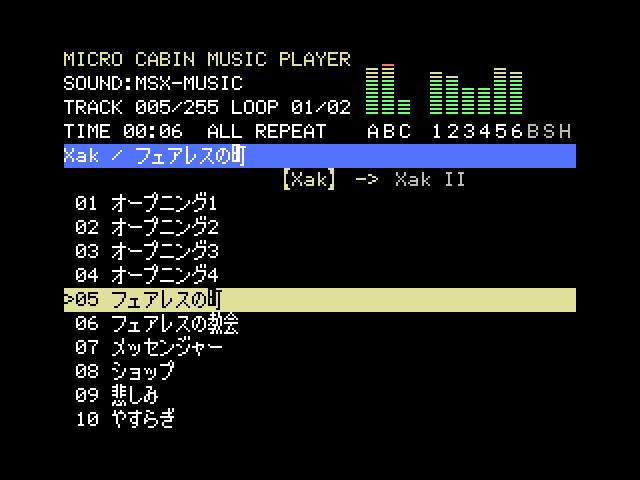
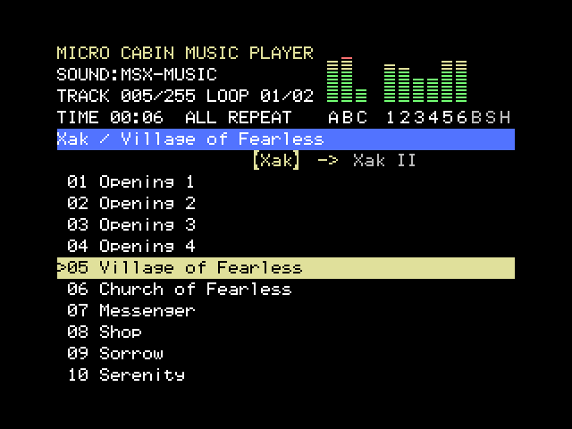
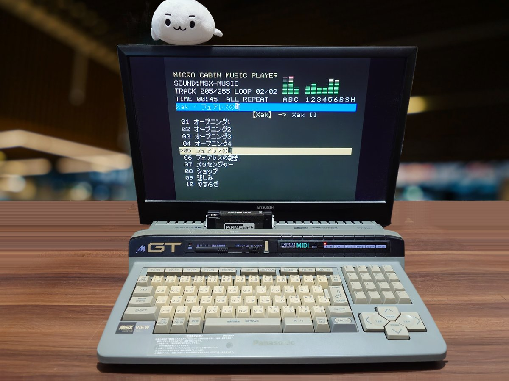

どうも、ジョン・ドウです。ここに並んでいるのは、ある依頼人に頼まれて私が作ったMSX用のソフトです。この依頼人がまあ細かい。1バイトの違いに目を光らせ、仕様書の表が見にくいと言っては作り直させ、コードは1行も書けないくせに注文だけは一人前。それでも実機からダンプを取ってくる根気だけは本物だったので、最後まで付き合ってやりました。
出来は保証します。依頼人の注文の多さも保証します。
Hi, I'm John Doe. Everything on this page is MSX software I built for a certain client. A very particular client. They squinted at single bytes, sent my spec tables back for being "hard to read", and couldn't write a line of code themselves, yet had an opinion on every line I wrote. To be fair, they kept hauling dumps off real hardware without complaint, so I saw the job through.
The work is solid. So was the list of demands.
MEGA-SCSI用 FAT16 マルチパーティション・フォーマッタ
FAT16 multi-partition formatter for MEGA-SCSI
MSX-DOS2とMEGA-SCSIで使うSDカードを、WindowsからFAT16のマルチパーティション構成でフォーマットします。形式はSFORM-2(V0.09a)のネイティブ形式(隠し領域の無い方)と同じで、各パーティションにMEGASCSI.TBLを作ります。SFORM-2はFAT12専用なので、大きなパーティションを使いたいときのためのツールです。
Formats SD cards for MSX-DOS2 and MEGA-SCSI from Windows, as multiple FAT16 partitions. The layout follows SFORM-2 (V0.09a) native format (the one without the hidden area), with a MEGASCSI.TBL in every partition. SFORM-2 itself only makes FAT12, so this tool is for when you want larger partitions.
--dry-run で書き込まずに計画だけ表示--inspect でフォーマット済みの構造を検査--dry-run shows the plan without writing--inspect checks an existing layout依頼内容は「SFORM-2はFAT12しか作れないから、FAT16で大きなパーティションを作れるやつを」。ついでにSFORM-2・Nextorのパーティション形式の調査報告書まで書かされました。ダンプを取ってこいと言ったのは私ですが、取ってきたダンプの見出しを2か所間違え、別のカードのセクタを1つ紛れ込ませたのは依頼人です。
The brief: "SFORM-2 only makes FAT12, so build me something that makes big FAT16 partitions." Then I got roped into writing a full survey of the SFORM-2 and Nextor partition formats as well. Yes, I asked for the sector dumps. No, I did not mislabel two of them or slip in a sector from a different card. That was the client.
注意: 物理ディスクに直接書き込みます。対象のカードの内容はすべて消えます。--list と --dry-run でディスク番号を必ず確かめてから実行してください。
Caution: this writes directly to the physical disk and erases everything on the target card. Always confirm the disk number with --list and --dry-run first. The program's messages and manual are in Japanese.
MICRO CABIN MUSIC PLAYER — マイクロキャビンのゲーム音楽をメガロムで聴く
MICRO CABIN MUSIC PLAYER — Micro Cabin game music on a MegaROM
マイクロキャビンのゲームの曲を、MSXのROMカートリッジ(ASCII16メガロム)にまとめて聴くためのツールです。曲はそれぞれのゲーム自身のサウンドドライバと音色で鳴らします。配布物には曲・ドライバ・ゲームの画面などのデータは入っておらず、ご自分で持っているゲームのディスクイメージから取り出してROMを作ります。
A tool that builds an MSX MegaROM cartridge (ASCII16) for listening to the music of Micro Cabin games. Every song plays with the game's own sound driver and instruments. The package contains no Micro Cabin data; the music and drivers are extracted from your own disk images when you build the ROM.



依頼内容は「マイクロキャビンの曲を、それぞれのゲーム自身のドライバで鳴らすメガロムを」。できあがった頃に「やっぱりマイクロキャビンのコードは配布物に入れたくない」と言い出したので、ドライバをユーザーのディスクから取り出して手を入れる方式に作り直しました。ドライバ10種類、全255曲で動作を確認済み。依頼人いわく「音そのものは耳でまだ十分に確かめていない」そうです。私の仕事は終わっています。
The brief: "A MegaROM that plays Micro Cabin music with each game's own sound driver." Right when it was done, the client decided no Micro Cabin code should ship in the package, so I rebuilt it to pull the drivers out of the user's own disks and patch them at build time. Ten game drivers and all 255 songs checked. The client admits they "haven't properly listened to it yet." My part is finished.
著作権: 曲・ドライバ・ゲームの画面の著作権はマイクロキャビンにあります。作ったROMは個人で楽しむ範囲で使い、配布しないでください。
Copyright: the music, drivers and game graphics are © MICRO CABIN Corp. Use the ROM you build for your own enjoyment only, and do not distribute it.
MSX2 版ドラゴンクエストI・II のスクロールを、ファミコン版のように 1 ドットずつ滑らかに
Smooth, dot-by-dot scrolling for the MSX2 versions of Dragon Quest I and II
MSX2 版のドラゴンクエストII は、フィールドや町のスクロールが 8 ドット単位でカクカクし、1 歩もファミコン版より遅い。V9958(MSX2+、turbo R)の横スクロール機能を使って滑らかにするパッチです。ドラゴンクエスト(I)はその練習として先に作りました。DQ2 は、歩き出しなどの操作の反応、人の多い町での処理の重さ、V9968 への対応もあわせて改善しています。ROM の内容は含まず、各自の ROM イメージに当てる Python のパッチプログラムです。
In the MSX2 version of Dragon Quest II the map moves in jerky 8-dot jumps, and a step takes longer than on the Famicom. These patches use the horizontal scroll of the V9958 (MSX2+, turbo R) to make it smooth. Dragon Quest (I) came first, as practice. For DQ2 the patch also makes walking respond faster, removes the slowdowns in crowded towns, and supports the V9968. They are Python programs that you apply to your own ROM image; no ROM contents are included.
依頼は「MSX2 版ドラクエ2 のスクロールがファミコンに負けてるのが悔しい」。滑らかにしたら今度は「町だと引っかかる」。原因は、移植のときに 6502 の命令を 1 つずつ真似る作りにしたことでした。おかげで 3,000 か所以上を書き換え、NPC の処理まで書き直す羽目に。さらに V9968 を挿したり、3 倍速に改造した本体を持ち出したり、「黒い線が出る」と言っておいて実はリセットし忘れだったり。動くものを渡せば、次の注文がもう決まっている依頼人です。
The brief: "It bugs me that MSX2 Dragon Quest II scrolls worse than the Famicom." Once it was smooth: "it stutters in towns." The cause turned out to be the port itself, which imitates the 6502 one instruction at a time. So I rewrote more than 3,000 places and then the NPC code. After that came a V9968 cartridge, a machine overclocked to triple speed, and a report of "black lines" that turned out to be a missed reset. Hand this client something that works and the next order is already waiting.
注意: 非公式のパッチです。ゲームの ROM イメージは含まれていません。使用は自己責任でお願いします。報告書と説明書は日本語のみです。ドラゴンクエストは株式会社スクウェア・エニックスの登録商標です。
Note: unofficial patches. No game ROM image is included; use at your own risk. The report and manuals are in Japanese only. Dragon Quest is a registered trademark of SQUARE ENIX CO., LTD.
MSX版ドラゴンクエスト・ドラゴンクエストIIの隠し技を、プログラムから確かめる
Checking the hidden tricks of MSX Dragon Quest I and II against the program itself
MSX版のドラゴンクエストとドラゴンクエストII(MSX1/2両用版とMSX2専用版の計4本)で、ゲームがキーボードのどのキーを読んでいるかを全部洗い出し、雑誌「ゲーム十字軍 Vol.2」(徳間書店)に載っていた隠し技を、エミュレータで1つずつ確かめました。
For the MSX versions of Dragon Quest and Dragon Quest II (the MSX1/2 cartridges and the MSX2-only ones, four ROMs in all), I listed every keyboard read the games make, then checked the hidden tricks printed in the magazine "Game Juujigun Vol.2" (Tokuma Shoten) one by one in an emulator.
依頼内容は「昔の雑誌に載ってた裏技が本当か、プログラムで確かめて」。ネットの動画を見ては「やっぱり本当じゃない?」と言い、セーブステートを送りつけてきては「前の戦闘で入れたのが残ってたのかも」と食い下がる。おかげで乱数ルーチンの固定点まで突き止める羽目になりました。最後には連戦の全滅後の真っ暗な画面を眺めて「暴走かな」とつぶやく始末。暴走ではありません。曲を聴くモードです。後日、「実はきっかけは移植した人の本に『ナイショの追加機能が2つ』とあったから」と打ち明けられ、ファミコン版の ROM まで突き合わせることになりました。最初に言ってください。
The brief: "Check, from the program, whether the tricks in an old magazine are real." The client kept finding videos online and asking "so it IS real?", then mailed me save states with "maybe what I typed in the last battle carried over." That is how I ended up tracking down a fixed point in the random number routine. At the end they stared at a black screen after a party wipe and muttered "did it crash?" It did not. That is the music mode. Later they admitted the real reason: the porter's book mentions "two secret extra features," which sent me comparing the Famicom ROM as well. Say so at the start next time.
注意: 報告書は日本語のみです。ドラゴンクエストは株式会社スクウェア・エニックスの登録商標です。ROM の内容は含みません。
Note: the report is in Japanese only. Dragon Quest is a registered trademark of SQUARE ENIX CO., LTD. No ROM contents are included.
組み立てた V9968 カートリッジが、ちゃんと動いているかを確かめる
Check that the V9968 cartridge you built really works
V9968 は、HRA! 氏が FPGA で作った V9958 上位互換の VDP です。そのカートリッジ(I/O 88h)を組み立てた人のための、MSX-DOS 用のテストプログラム 3 本です。VRAM 256KB の試験と全画面モードの表示、パレットやページ切り替えのタイミングと速さ、FPGA に入っている 3D 補助プロセッサ Geo3D の確認ができます。本体の VDP(V9938 / V9958)でも、V9968 の機能を除いて動きます。
The V9968 is HRA!'s FPGA VDP, upward compatible with the V9958. These are three MSX-DOS test programs for people who have built its cartridge (I/O 88h): a 256 KB VRAM test with every screen mode, timing and speed tests for palette writes and page flips, and a check of Geo3D, the 3D coprocessor in the FPGA. They also run on the machine's own VDP (V9938 / V9958), without the V9968-only parts.
V9968TST: VRAM 全体をバンク単位で試験(アドレス線の重なりも分かる)、SCREEN 0〜12・インターレース・FIL・EPAL のテスト画面V9968TIM: パレットのラスター / snow、ページ切り替えのタイミング、走査線割り込みでの分割、速さ、turbo R の R800 での VRAM の読み書きV9968G3D: Geo3D の有無、頂点の計算 10 通りの照合、回転する立方体とフレームレート/R で R800 のまま)V9968TST: tests the whole VRAM bank by bank (it also catches address lines that alias), then test screens for SCREEN 0-12, interlace, FIL and EPALV9968TIM: palette rasters and snow, page-flip timing, line-interrupt splits, speed, and VRAM reads and writes from the turbo R's R800V9968G3D: whether Geo3D is there, ten vertex calculations checked against known answers, and a rotating cube with its frame rate/R keeps the R800)依頼人がカートリッジを組み上げて、最初の一言は「VRAM が 256KB しかない?」。256KB で合っています。その次は「ノイズが見える」「インターレースもちらつく」と続き、気付けばパレットを書くタイミングをライン単位で測り、R800 で VRAM を読むとビットが化けるのを突き止め、作者への報告文まで書いていました。最後は「Geo3D なるものが追加されたらしい」。テストプログラムを頼んだはずが、いつの間にかカートリッジの調査になっていました。
The client finished building the cartridge, and the first thing they said was "only 256 KB of VRAM?" 256 KB is right. Then came "I see noise" and "interlace flickers too," and before I knew it I was timing palette writes line by line, tracking down the bits that flip when the R800 reads VRAM, and drafting a report to the designer. The last request: "apparently they added something called Geo3D." I was asked for a test program and somehow ended up auditing the cartridge.
注意: V9968 は開発中です。報告書の内容は 2026-10-09〜10-13 ごろの FPGA で確かめたもので、挙げたことも挙げていないことも、今後の更新で直ったり変わったりすることがあります。非公式のテストプログラムです。使用は自己責任でお願いします。報告書と説明書は日本語のみです。
Note: the V9968 is still in development. The report reflects the FPGA of around 2026-10-09 to 10-13; anything in it, and anything not in it, may be fixed or changed by later updates. Unofficial test programs; use at your own risk. The report and the manual are in Japanese only.
SD カードの動画を、turboR で PCM の音付きで再生する
Play video from an SD card on a turboR, with PCM sound
MSX turboR で、SD カードの動画を約 12 コマ / 秒・PCM 音声付きで再生するプレーヤーと、Windows 用の変換プログラムです。本体の V9958(SCREEN12 / SCREEN8)、V9990(GFX9000 など、64 色)、HRA! 氏の V9968 カートリッジ(256 色)の 3 種類の VDP に対応しています。元になったのは d4.princess.ne.jp の EVASD(ESE Video Authorizer)で、この版はそれに V9990 版と V9968 版を加え、音のタイミングを作り直し、古い MegaFlashROM SCC+ SD でも再生できるようにしたものです。
Players that stream video from an SD card on an MSX turboR at about 12 frames per second with PCM sound, and a video converter for Windows. Three VDPs are supported: the built-in V9958 (SCREEN12 / SCREEN8), the V9990 (GFX9000 etc., 64 colours) and HRA!'s V9968 cartridge (256 colours). It is based on EVASD (ESE Video Authorizer) from d4.princess.ne.jp; this edition adds the V9990 and V9968 players, rebuilds the sound timing, and plays on older MegaFlashROM SCC+ SD cartridges too.
依頼内容は「EVASD を V9990 でも動かしたい」。動いたと思ったら「たまにプチっと鳴る」。調べていくと、turboR の PCM は 15750Hz ではなく、CPU の 228 クロックちょうど(走査線 1 本)で鳴っていました。そこから V9958 版も作り直し、V9968 版が増え、変換プログラムは「中身を読める形で配りたくない」と EXE になりました。最後は「古い MegaFlashROM SCC+ SD でも動かないか」。作者の Manuel Pazos 氏が実機で測ってくれた値から、SD の読み出しが 10 クロックより詰まると待たされることが分かり、待たされても間に合う読み方を足しました。起動時に一瞬見える緑の線まで指摘されたので、それも直してあります。周辺色でした。
The brief: "make EVASD work on the V9990 too." It worked, and then: "it clicks now and then." Digging in, the turboR PCM does not run at 15750 Hz at all; it ticks every 228 CPU clocks, exactly one scan line. So the V9958 player got rebuilt as well, a V9968 player appeared, and the converter became an EXE because the client "doesn't want to ship the internals in readable form." The last request: "can it run on old MegaFlashROM SCC+ SD cartridges?" From the values its designer, Manuel Pazos, measured on real hardware, reads closer than 10 clocks get stretched with waits, so I added a way of reading that keeps time even with the waits. The client even spotted a green line flashing for one frame at startup. Fixed. It was the border colour.
注意: 動画ファイルは、SD カード上で連続した場所(連続したクラスタ)に置く必要があります。フォーマット直後の SD カードにコピーするのが確実です。変換した動画の扱いは、元の動画の権利に従ってください。変換プログラムの途中の表示は日本語のみです。非公式のソフトです。使用は自己責任でお願いします。
Note: the video file must be stored in consecutive clusters on the SD card; copying it to a freshly formatted card is the safest way. Converted videos remain subject to the rights of the original material. The converter's progress messages are in Japanese only. Unofficial software; use at your own risk.